Chapter 36: Sensory Systems¶
Introduction¶
In more advanced animals, the senses are constantly at work, making the animal aware of stimuli—such as light, or sound, or the presence of a chemical substance in the external environment—and monitoring information about the organism’s internal environment. All bilaterally symmetric animals have a sensory system, and the development of any species’ sensory system has been driven by natural selection; thus, sensory systems differ among species according to the demands of their environments. The shark, unlike most fish predators, is electrosensitive—that is, sensitive to electrical fields produced by other animals in its environment. While it is helpful to this underwater predator, electrosensitivity is a sense not found in most land animals.
36.1 Sensory Processes¶
Learning Objectives
By the end of this section, you will be able to do the following:
- Identify the general and special senses in humans
- Describe three important steps in sensory perception
- Explain the concept of just-noticeable difference in sensory perception
Senses provide information about the body and its environment. Humans have five special senses: olfaction (smell), gustation (taste), equilibrium (balance and body position), vision, and hearing. Additionally, we possess general senses, also called somatosensation, which respond to stimuli like temperature, pain, pressure, and vibration. Vestibular sensation, which is an organism’s sense of spatial orientation and balance, proprioception (position of bones, joints, and muscles), and the sense of limb position that is used to track kinesthesia (limb movement) are part of somatosensation. Although the sensory systems associated with these senses are very different, they all share a common function: to convert a stimulus (such as light, or sound, or the position of the body) into an electrical signal in the nervous system. This process is called sensory transduction.
There are two broad types of cellular systems that perform sensory transduction. In one, a neuron works with a sensory receptor, a cell, or cell process that is specialized to engage with and detect a specific stimulus. Stimulation of the sensory receptor activates the associated afferent neuron, which carries information about the stimulus to the central nervous system. In the second type of sensory transduction, a sensory nerve ending responds to a stimulus in the internal or external environment: this neuron constitutes the sensory receptor. Free nerve endings can be stimulated by several different stimuli, thus showing little receptor specificity. For example, pain receptors in your gums and teeth may be stimulated by temperature changes, chemical stimulation, or pressure.
Reception¶
The first step in sensation is reception, which is the activation of sensory receptors by stimuli such as mechanical stimuli (being bent or squished, for example), chemicals, or temperature. The receptor can then respond to the stimuli. The region in space in which a given sensory receptor can respond to a stimulus, be it far away or in contact with the body, is that receptor’s receptive field. Think for a moment about the differences in receptive fields for the different senses. For the sense of touch, a stimulus must come into contact with the body. For the sense of hearing, a stimulus can be a moderate distance away (some baleen whale sounds can propagate for many kilometers). For vision, a stimulus can be very far away; for example, the visual system perceives light from stars at enormous distances.
Transduction¶
The most fundamental function of a sensory system is the translation of a sensory signal to an electrical signal in the nervous system. This takes place at the sensory receptor, and the change in electrical potential that is produced is called the receptor potential. How is sensory input, such as pressure on the skin, changed to a receptor potential? In this example, a type of receptor called a mechanoreceptor (as shown in Figure 36.2) possesses specialized membranes that respond to pressure. Disturbance of these dendrites by compressing them or bending them opens gated ion channels in the plasma membrane of the sensory neuron, changing its electrical potential. Recall that in the nervous system, a positive change of a neuron’s electrical potential (also called the membrane potential), depolarizes the neuron. Receptor potentials are graded potentials: the magnitude of these graded (receptor) potentials varies with the strength of the stimulus. If the magnitude of depolarization is sufficient (that is, if membrane potential reaches a threshold), the neuron will fire an action potential. In most cases, the correct stimulus impinging on a sensory receptor will drive membrane potential in a positive direction, although for some receptors, such as those in the visual system, this is not always the case.
![Illustration A shows a closed gated ion channel embedded in the plasma membrane. A hair-like tether connects the channel to the extracellular matrix outside the cell, and another tether connects the channel to the inner cytoskeleton. When the extracellular matrix is deflected, the tether tugs on the gated ion channel, pulling it open. Ions may now enter or exit the cell. Illustration B shows stereocilia, hair-like projections on outer hair cells that are attached to the tectorial membrane of the inner ear. The outer hair cells are connected to the cochlear nerve.](img/figure-36-01-01f.webp)
Sensory receptors for different senses are very different from each other, and they are specialized according to the type of stimulus they sense: they have receptor specificity. For example, touch receptors, light receptors, and sound receptors are each activated by different stimuli. Touch receptors are not sensitive to light or sound; they are sensitive only to touch or pressure. However, stimuli may be combined at higher levels in the brain, as happens with olfaction, contributing to our sense of taste.
Encoding and Transmission of Sensory Information¶
Four aspects of sensory information are encoded by sensory systems: the type of stimulus, the location of the stimulus in the receptive field, the duration of the stimulus, and the relative intensity of the stimulus. Thus, action potentials transmitted over a sensory receptor’s afferent axons encode one type of stimulus, and this segregation of the senses is preserved in other sensory circuits. For example, auditory receptors transmit signals over their own dedicated system, and electrical activity in the axons of the auditory receptors will be interpreted by the brain as an auditory stimulus—a sound.
The intensity of a stimulus is often encoded in the rate of action potentials produced by the sensory receptor. Thus, an intense stimulus will produce a more rapid train of action potentials, and reducing the stimulus will likewise slow the rate of production of action potentials. A second way in which intensity is encoded is by the number of receptors activated. An intense stimulus might initiate action potentials in a large number of adjacent receptors, while a less intense stimulus might stimulate fewer receptors. Integration of sensory information begins as soon as the information is received in the CNS, and the brain will further process incoming signals.
Perception¶
Perception is an individual’s interpretation of a sensation. Although perception relies on the activation of sensory receptors, perception happens not at the level of the sensory receptor, but at higher levels in the nervous system, in the brain. The brain distinguishes sensory stimuli through a sensory pathway: action potentials from sensory receptors travel along neurons that are dedicated to a particular stimulus. These neurons are dedicated to that particular stimulus and synapse with particular neurons in the brain or spinal cord.
All sensory signals, except those from the olfactory system, are transmitted through the central nervous system and are routed to the thalamus and to the appropriate region of the cortex. Recall that the thalamus is a structure in the forebrain that serves as a clearinghouse and relay station for sensory (as well as motor) signals. When the sensory signal exits the thalamus, it is conducted to the specific area of the cortex (Figure 36.3) dedicated to processing that particular sense.
How are neural signals interpreted? Interpretation of sensory signals between individuals of the same species is largely similar, owing to the inherited similarity of their nervous systems; however, there are some individual differences. A good example of this is individual tolerances to a painful stimulus, such as dental pain, which certainly differ.
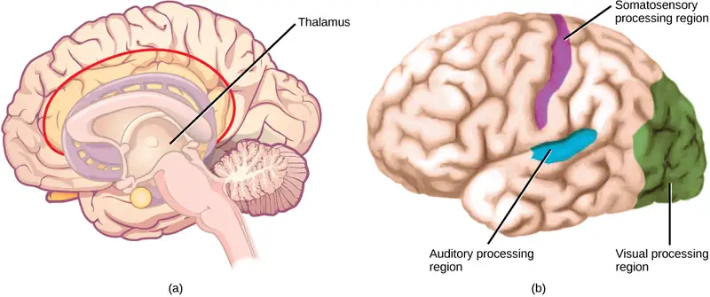
Scientific Method Connection
Just-Noticeable Difference
It is easy to differentiate between a one-pound bag of rice and a two-pound bag of rice. There is a one-pound difference, and one bag is twice as heavy as the other. However, would it be as easy to differentiate between a 20- and a 21-pound bag?
Question: What is the smallest detectible weight difference between a one-pound bag of rice and a larger bag? What is the smallest detectible difference between a 20-pound bag and a larger bag? In both cases, at what weights are the differences detected? This smallest detectible difference in stimuli is known as the just-noticeable difference (JND).
Background: Research background literature on JND and on Weber’s Law, a description of a proposed mathematical relationship between the overall magnitude of the stimulus and the JND. You will be testing JND of different weights of rice in bags. Choose a convenient increment that is to be stepped through while testing. For example, you could choose 10 percent increments between one and two pounds (1.1, 1.2, 1.3, 1.4, and so on) or 20 percent increments (1.2, 1.4, 1.6, and 1.8).
Hypothesis: Develop a hypothesis about JND in terms of percentage of the whole weight being tested (such as “the JND between the two small bags and between the two large bags is proportionally the same,” or “. . . is not proportionally the same.”) So, for the first hypothesis, if the JND between the one-pound bag and a larger bag is 0.2 pounds (that is, 20 percent; 1.0 pound feels the same as 1.1 pounds, but 1.0 pound feels less than 1.2 pounds), then the JND between the 20-pound bag and a larger bag will also be 20 percent. (So, 20 pounds feels the same as 22 pounds or 23 pounds, but 20 pounds feels less than 24 pounds.)
Test the hypothesis: Enlist 24 participants, and split them into two groups of 12. To set up the demonstration, assuming a 10 percent increment was selected, have the first group be the one-pound group. As a counter-balancing measure against a systematic error, however, six of the first group will compare one pound to two pounds, and step down in weight (1.0 to 2.0, 1.0 to 1.9, and so on), while the other six will step up (1.0 to 1.1, 1.0 to 1.2, and so on). Apply the same principle to the 20-pound group (20 to 40, 20 to 38, and so on, and 20 to 22, 20 to 24, and so on). Given the large difference between 20 and 40 pounds, you may wish to use 30 pounds as your larger weight. In any case, use two weights that are easily detectable as different.
Record the observations: Record the data in a table similar to the table below. For the one-pound and 20-pound groups (base weights) record a plus sign (+) for each participant that detects a difference between the base weight and the step weight. Record a minus sign (-) for each participant that finds no difference. If one-tenth steps were not used, then replace the steps in the “Step Weight” columns with the step you are using.
Table 36.1
| Results of JND Testing (+ = difference; – = no difference) | |||
|---|---|---|---|
| Step Weight | One pound | 20 pounds | Step Weight |
| 1.1 | 22 | ||
| 1.2 | 24 | ||
| 1.3 | 26 | ||
| 1.4 | 28 | ||
| 1.5 | 30 | ||
| 1.6 | 32 | ||
| 1.7 | 34 | ||
| 1.8 | 36 | ||
| 1.9 | 38 | ||
| 2.0 | 40 | ||
Analyze the data/report the results: What step weight did all participants find to be equal with one-pound base weight? What about the 20-pound group?
Draw a conclusion: Did the data support the hypothesis? Are the final weights proportionally the same? If not, why not? Do the findings adhere to Weber’s Law? Weber’s Law states that the concept that a just-noticeable difference in a stimulus is proportional to the magnitude of the original stimulus.
36.2 Somatosensation¶
Learning Objectives
By the end of this section, you will be able to do the following:
- Describe four important mechanoreceptors in human skin
- Describe the topographical distribution of somatosensory receptors between glabrous and hairy skin
- Explain why the perception of pain is subjective
Somatosensation is a mixed sensory category and includes all sensation received from the skin and mucous membranes, as well from as the limbs and joints. Somatosensation is also known as tactile sense, or more familiarly, as the sense of touch. Somatosensation occurs all over the exterior of the body and at some interior locations as well. A variety of receptor types—embedded in the skin, mucous membranes, muscles, joints, internal organs, and cardiovascular system—play a role.
Recall that the epidermis is the outermost layer of skin in mammals. It is relatively thin, is composed of keratin-filled cells, and has no blood supply. The epidermis serves as a barrier to water and to invasion by pathogens. Below this, the much thicker dermis contains blood vessels, sweat glands, hair follicles, lymph vessels, and lipid-secreting sebaceous glands (Figure 36.4). Below the epidermis and dermis is the subcutaneous tissue, or hypodermis, the fatty layer that contains blood vessels, connective tissue, and the axons of sensory neurons. The hypodermis, which holds about 50 percent of the body’s fat, attaches the dermis to the bone and muscle, and supplies nerves and blood vessels to the dermis.
![Illustration shows a cross section of mammalian skin. The outer epidermis is a thin layer, smooth on the outside. The middle dermis is much thicker than the epedermis. Blood, nerve and lymph vessels run along the bottom of it, and smaller capillaries and nerve endings extend to the upper part. One nerve ends in a receptor. Sweat glands extend from the dermis into the epidermis. Hair follicles extend from the base of the dermis to the upper part where they are joined by oil glands. Hairs extend from the follicles, through the epidermis and out of the skin. The hypodermis is a fatty layer beneath the dermis, below the blood vessels, and bases of the hair follicles.](img/figure-36-02-01.webp)
Somatosensory Receptors¶
Somatosensory receptors are classified into four categories: mechanoreceptors, thermoreceptors, pain receptors (nociceptors), and chemoreceptors. These categories are based on the nature of stimuli each receptor class transduces. What is commonly referred to as “touch” involves more than one kind of stimulus and more than one kind of receptor. Mechanoreceptors in the skin are described as encapsulated (that is, surrounded by a capsule) or unencapsulated (a group that includes free nerve endings). A free nerve ending, as its name implies, is an unencapsulated dendrite of a sensory neuron. Free nerve endings are the most common nerve endings in skin, and they extend into the middle of the epidermis. Free nerve endings are sensitive to painful stimuli, to hot and cold, and to light touch. They are slow to adjust to a stimulus and so are less sensitive to abrupt changes in stimulation.
There are three classes of mechanoreceptors: tactile, proprioceptors, and baroreceptors. Mechanoreceptors sense stimuli due to physical deformation of their plasma membranes. They contain mechanically gated ion channels whose gates open or close in response to pressure, touch, stretching, and sound. There are four primary tactile mechanoreceptors in human skin: Merkel’s disks, Meissner’s corpuscles, Ruffini endings, and Pacinian corpuscles; two are located toward the surface of the skin and two are located deeper. A fifth type of mechanoreceptor, Krause end bulbs, are found only in specialized regions. Merkel’s disks (shown in Figure 36.5) are found in the upper layers of skin near the base of the epidermis, both in skin that has hair and on glabrous skin, that is, the hairless skin found on the palms and fingers, the soles of the feet, and the lips of humans and other primates. Merkel’s disks are densely distributed in the fingertips and lips. They are slow-adapting, unencapsulated nerve endings, and they respond to light touch. Light touch, also known as discriminative touch, is a light pressure that allows the location of a stimulus to be pinpointed. The receptive fields of Merkel’s disks are small with well-defined borders. That makes them finely sensitive to edges and they come into use in tasks such as typing on a keyboard.
Visual Connection
![Illustration shows the location of various mechanoreceptors in a cross section of the epidermis and dermis. A nerve runs along the middle of the dermis, and all the mechanoreceptors are connected to it. Ruffini endings, Merkel’s disks, and Meissner’s corpuscles are all located in the upper dermis above the nerve. Ruffini endings are bulbous, horizontal mechanoreceptors located in the middle of the upper dermis. Meissner’s corpuscles are bulbous, vertical mechanoreceptors that touch the bottom of the epidermis. Merkel’s disks have finger-like projections that also touch the bottom of the epidermis. The roundish Krause end bulbs are also encapsulated within the dermis. The last type of mechanoreceptor, Pacini corpuscles, are oval mechanoreceptors located in the lower dermis.](img/figure-36-02-02.webp)
Which of the following statements about mechanoreceptors is false?
- Pacinian corpuscles are found in both glabrous and hairy skin.
- Merkel’s disks are abundant on the fingertips and lips.
- Ruffini endings are encapsulated mechanoreceptors.
- Meissner’s corpuscles extend into the lower dermis.
Meissner’s corpuscles, (shown in Figure 36.6) also known as tactile corpuscles, are found in the upper dermis, but they project into the epidermis. They, too, are found primarily in the glabrous skin on the fingertips and eyelids. They respond to fine touch and pressure, but they also respond to low-frequency vibration or flutter. They are rapidly adapting, fluid-filled, encapsulated neurons with small, well-defined borders and are responsive to fine details. Like Merkel’s disks, Meissner’s corpuscles are not as plentiful in the palms as they are in the fingertips.
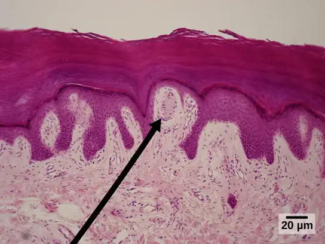
Deeper in the epidermis, near the base, are Ruffini endings, which are also known as bulbous corpuscles. They are found in both glabrous and hairy skin. These are slow-adapting, encapsulated mechanoreceptors that detect skin stretch and deformations within joints, so they provide valuable feedback for gripping objects and controlling finger position and movement. Thus, they also contribute to proprioception and kinesthesia. Ruffini endings also detect warmth. Note that these warmth detectors are situated deeper in the skin than are the cold detectors. It is not surprising, then, that humans detect cold stimuli before they detect warm stimuli.
Pacinian corpuscles (seen in Figure 36.7) are located deep in the dermis of both glabrous and hairy skin and are structurally similar to Meissner’s corpuscles; they are found in the bone periosteum, joint capsules, pancreas and other viscera, breast, and genitals. They are rapidly adapting mechanoreceptors that sense deep transient (but not prolonged) pressure and high-frequency vibration. Pacinian receptors detect pressure and vibration by being compressed, stimulating their internal dendrites. There are fewer Pacinian corpuscles and Ruffini endings in skin than there are Merkel’s disks and Meissner’s corpuscles.
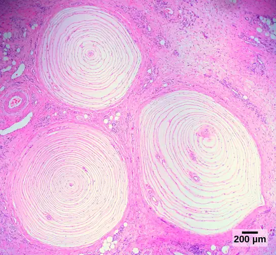
In proprioception, proprioceptive and kinesthetic signals travel through myelinated afferent neurons running from the spinal cord to the medulla. Neurons are not physically connected, but communicate via neurotransmitters secreted into synapses or “gaps” between communicating neurons. Once in the medulla, the neurons continue carrying the signals to the thalamus.
Muscle spindles are stretch receptors that detect the amount of stretch, or lengthening of muscles. Related to these are Golgi tendon organs, which are tension receptors that detect the force of muscle contraction. Proprioceptive and kinesthetic signals come from limbs. Unconscious proprioceptive signals run from the spinal cord to the cerebellum, the brain region that coordinates muscle contraction, rather than to the thalamus, like most other sensory information.
Baroreceptors detect pressure changes in an organ. They are found in the walls of the carotid artery and the aorta where they monitor blood pressure, and in the lungs where they detect the degree of lung expansion. Stretch receptors are found at various sites in the digestive and urinary systems.
In addition to these two types of deeper receptors, there are also rapidly adapting hair receptors, which are found on nerve endings that wrap around the base of hair follicles. There are a few types of hair receptors that detect slow and rapid hair movement, and they differ in their sensitivity to movement. Some hair receptors also detect skin deflection, and certain rapidly adapting hair receptors allow detection of stimuli that have not yet touched the skin.
Integration of Signals from Mechanoreceptors¶
The configuration of the different types of receptors working in concert in human skin results in a very refined sense of touch. The nociceptive receptors—those that detect pain—are located near the surface. Small, finely calibrated mechanoreceptors—Merkel’s disks and Meissner’s corpuscles—are located in the upper layers and can precisely localize even gentle touch. The large mechanoreceptors—Pacinian corpuscles and Ruffini endings—are located in the lower layers and respond to deeper touch. (Consider that the deep pressure that reaches those deeper receptors would not need to be finely localized.) Both the upper and lower layers of the skin hold rapidly and slowly adapting receptors. Both primary somatosensory cortex and secondary cortical areas are responsible for processing the complex picture of stimuli transmitted from the interplay of mechanoreceptors.
Density of Mechanoreceptors¶
The distribution of touch receptors in human skin is not consistent over the body. In humans, touch receptors are less dense in skin covered with any type of hair, such as the arms, legs, torso, and face. Touch receptors are denser in glabrous skin (the type found on human fingertips and lips, for example), which is typically more sensitive and is thicker than hairy skin (4 to 5 mm versus 2 to 3 mm).
How is receptor density estimated in a human subject? The relative density of pressure receptors in different locations on the body can be demonstrated experimentally using a two-point discrimination test. In this demonstration, two sharp points, such as two thumbtacks, are brought into contact with the subject’s skin (though not hard enough to cause pain or break the skin). The subject reports if they feel one point or two points. If the two points are felt as one point, it can be inferred that the two points are both in the receptive field of a single sensory receptor. If two points are felt as two separate points, each is in the receptive field of two separate sensory receptors. The points could then be moved closer and retested until the subject reports feeling only one point, and the size of the receptive field of a single receptor could be estimated from that distance.
Thermoreception¶
In addition to Krause end bulbs that detect cold and Ruffini endings that detect warmth, there are different types of cold receptors on some free nerve endings: thermoreceptors, located in the dermis, skeletal muscles, liver, and hypothalamus, that are activated by different temperatures. Their pathways into the brain run from the spinal cord through the thalamus to the primary somatosensory cortex. Warmth and cold information from the face travels through one of the cranial nerves to the brain. You know from experience that a tolerably cold or hot stimulus can quickly progress to a much more intense stimulus that is no longer tolerable. Any stimulus that is too intense can be perceived as pain because temperature sensations are conducted along the same pathways that carry pain sensations.
Pain¶
Pain is the name given to nociception, which is the neural processing of injurious stimuli in response to tissue damage. Pain is caused by true sources of injury, such as contact with a heat source that causes a thermal burn or contact with a corrosive chemical. But pain also can be caused by harmless stimuli that mimic the action of damaging stimuli, such as contact with capsaicins, the compounds that cause peppers to taste hot and which are used in self-defense pepper sprays and certain topical medications. Peppers taste “hot” because the protein receptors that bind capsaicin open the same calcium channels that are activated by warm receptors.
Nociception starts at the sensory receptors, but pain, inasmuch as it is the perception of nociception, does not start until it is communicated to the brain. There are several nociceptive pathways to and through the brain. Most axons carrying nociceptive information into the brain from the spinal cord project to the thalamus (as do other sensory neurons) and the neural signal undergoes final processing in the primary somatosensory cortex. Interestingly, one nociceptive pathway projects not to the thalamus but directly to the hypothalamus in the forebrain, which modulates the cardiovascular and neuroendocrine functions of the autonomic nervous system. Recall that threatening—or painful—stimuli stimulate the sympathetic branch of the visceral sensory system, readying a fight-or-flight response.
Interactive
View this video that animates the five phases of nociceptive pain. nociceptive
36.3 Taste and Smell¶
Learning Objectives
By the end of this section, you will be able to do the following:
- Explain in what way smell and taste stimuli differ from other sensory stimuli
- Identify the five primary tastes that can be distinguished by humans
- Explain in anatomical terms why a dog’s sense of smell is more acute than a human’s
Taste, also called gustation, and smell, also called olfaction, are the most interconnected senses in that both involve molecules of the stimulus entering the body and bonding to receptors. Smell lets an animal sense the presence of food or other animals—whether potential mates, predators, or prey—or other chemicals in the environment that can impact their survival. Similarly, the sense of taste allows animals to discriminate between types of foods. While the value of a sense of smell is obvious, what is the value of a sense of taste? Different tasting foods have different attributes, both helpful and harmful. For example, sweet-tasting substances tend to be highly caloric, which could be necessary for survival in lean times. Bitterness is associated with toxicity, and sourness is associated with spoiled food. Salty foods are valuable in maintaining homeostasis by helping the body retain water and by providing ions necessary for cells to function.
Tastes and Odors¶
Both taste and odor stimuli are molecules taken in from the environment. The primary tastes detected by humans are sweet, sour, bitter, salty, and umami. The first four tastes need little explanation. The identification of umami as a fundamental taste occurred fairly recently—it was identified in 1908 by Japanese scientist Kikunae Ikeda while he worked with seaweed broth, but it was not widely accepted as a taste that could be physiologically distinguished until many years later. The taste of umami, also known as savoriness, is attributable to the taste of the amino acid L-glutamate. In fact, monosodium glutamate, or MSG, is often used in cooking to enhance the savory taste of certain foods. What is the adaptive value of being able to distinguish umami? Savory substances tend to be high in protein.
All odors that we perceive are molecules in the air we breathe. If a substance does not release molecules into the air from its surface, it has no smell. And if a human or other animal does not have a receptor that recognizes a specific molecule, then that molecule has no smell. Humans have about 350 olfactory receptor subtypes that work in various combinations to allow us to sense about 10,000 different odors. Compare that to mice, for example, which have about 1,300 olfactory receptor types, and therefore probably sense more odors. Both odors and tastes involve molecules that stimulate specific chemoreceptors. Although humans commonly distinguish taste as one sense and smell as another, they work together to create the perception of flavor. A person’s perception of flavor is reduced if they have congested nasal passages.
Reception and Transduction¶
Odorants (odor molecules) enter the nose and dissolve in the olfactory epithelium, the mucosa at the back of the nasal cavity (as illustrated in Figure 36.8). The olfactory epithelium is a collection of specialized olfactory receptors in the back of the nasal cavity that spans an area about 5 cm2 in humans. Recall that sensory cells are neurons. An olfactory receptor, which is a dendrite of a specialized neuron, responds when it binds certain molecules inhaled from the environment by sending impulses directly to the olfactory bulb of the brain. Humans have about 12 million olfactory receptors, distributed among hundreds of different receptor types that respond to different odors. Twelve million seems like a large number of receptors, but compare that to other animals: rabbits have about 100 million, most dogs have about 1 billion, and bloodhounds—dogs selectively bred for their sense of smell—have about 4 billion. The overall size of the olfactory epithelium also differs between species, with that of bloodhounds, for example, being many times larger than that of humans.
Olfactory neurons are bipolar neurons (neurons with two processes extending from the cell body). Each neuron has a single dendrite buried in the olfactory epithelium, and extending from this dendrite are 5 to 20 receptor-laden, hair-like cilia that trap odorant molecules. The sensory receptors on the cilia are proteins, and it is the variations in their amino acid chains that make the receptors sensitive to different odorants. Each olfactory sensory neuron has only one type of receptor on its cilia, and the receptors are specialized to detect specific odorants, so the bipolar neurons themselves are specialized. When an odorant binds with a receptor that recognizes it, the sensory neuron associated with the receptor is stimulated. Olfactory stimulation is the only sensory information that directly reaches the cerebral cortex, whereas other sensations are relayed through the thalamus.
Many of the details of the sense of smell were discovered relatively recently by Linda B. Buck and Richard Axel. In 1991, they were the first to pinpoint the olfactory receptors in the back of the nasal cavity of mice. Buck later proposed the way that these receptors could detect so many different smells: Some receptors detect more than one odor, and many odors can be detected by more than more receptor. These detection abilities are applied in different combinations of detection to create a pattern that can both be recognized and remembered. The exact nature of this scent identification (sometimes called odor coding) is still being researched and debated. Buck and Axel later shared the Nobel Prize in medicine for solving the next piece of the olfactory puzzle: the way that genes code the olfactory receptors, essentially showing the genetic nature of the sense of smell.
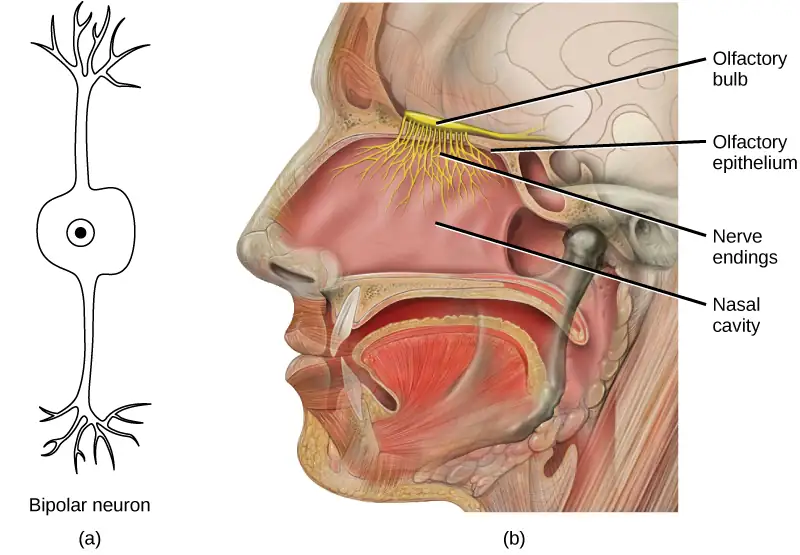
Evolution Connection: Pheromones
A pheromone is a chemical released by an animal that affects the behavior or physiology of animals of the same species. Pheromonal signals can have profound effects on animals that inhale them, but pheromones apparently are not consciously perceived in the same way as other odors. There are several different types of pheromones, which are released in urine or as glandular secretions. Certain pheromones are attractants to potential mates, others are repellents to potential competitors of the same sex, and still others play roles in mother-infant attachment. Some pheromones can also influence the timing of puberty, modify reproductive cycles, and even prevent embryonic implantation. While the roles of pheromones in many nonhuman species are important, pheromones have become less important in human behavior over evolutionary time compared to their importance to organisms with more limited behavioral repertoires.
The vomeronasal organ (VNO, or Jacobson’s organ) is a tubular, fluid-filled, olfactory organ present in many vertebrate animals that sits adjacent to the nasal cavity. It is very sensitive to pheromones and is connected to the nasal cavity by a duct. When molecules dissolve in the mucosa of the nasal cavity, they then enter the VNO where the pheromone molecules among them bind with specialized pheromone receptors. Upon exposure to pheromones from their own species or others, many animals, including cats, may display the flehmen response (shown in Figure 36.9), a curling of the upper lip that helps pheromone molecules enter the VNO.
Pheromonal signals are sent, not to the main olfactory bulb, but to a different neural structure that projects directly to the amygdala (recall that the amygdala is a brain center important in emotional reactions, such as fear). The pheromonal signal then continues to areas of the hypothalamus that are key to reproductive physiology and behavior. While some scientists assert that the VNO is apparently functionally vestigial in humans, even though there is a similar structure located near human nasal cavities, others are researching it as a possible functional system that may, for example, contribute to synchronization of menstrual cycles in people living in close proximity.
Taste¶
Detecting a taste (gustation) is fairly similar to detecting an odor (olfaction), given that both taste and smell rely on chemical receptors being stimulated by certain molecules. The primary organ of taste is the taste bud. A taste bud is a cluster of gustatory receptors (taste cells) that are located within the bumps on the tongue called papillae (singular: papilla) (illustrated in Figure 36.11). There are several structurally distinct papillae. Filiform papillae, which are located across the tongue, are tactile, providing friction that helps the tongue move substances, and contain no taste cells. In contrast, fungiform papillae, which are located mainly on the anterior two-thirds of the tongue, each contain one to eight taste buds and also have receptors for pressure and temperature.
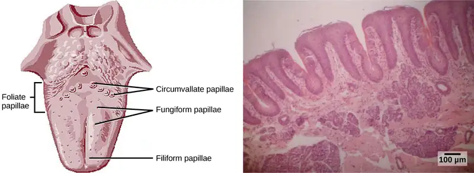
In addition to those two types of chemically and mechanically sensitive papillae are foliate papillae—leaf-like papillae located in parallel folds along the edges and toward the back of the tongue, as seen in the Figure 36.10 micrograph. Foliate papillae contain about 1,300 taste buds within their folds. Finally, there are circumvallate papillae, which are wall-like papillae in the shape of an inverted “V” at the back of the tongue. Each of these papillae is surrounded by a groove and contains about 250 taste buds.
Each taste bud’s taste cells are replaced every 10 to 14 days. These are elongated cells with hair-like processes called microvilli at the tips that extend into the taste bud pore (illustrated in Figure 36.11). Food molecules (tastants) are dissolved in saliva, and they bind with and stimulate the receptors on the microvilli. The receptors for tastants are located across the outer portion and front of the tongue, outside of the middle area where the filiform papillae are most prominent.
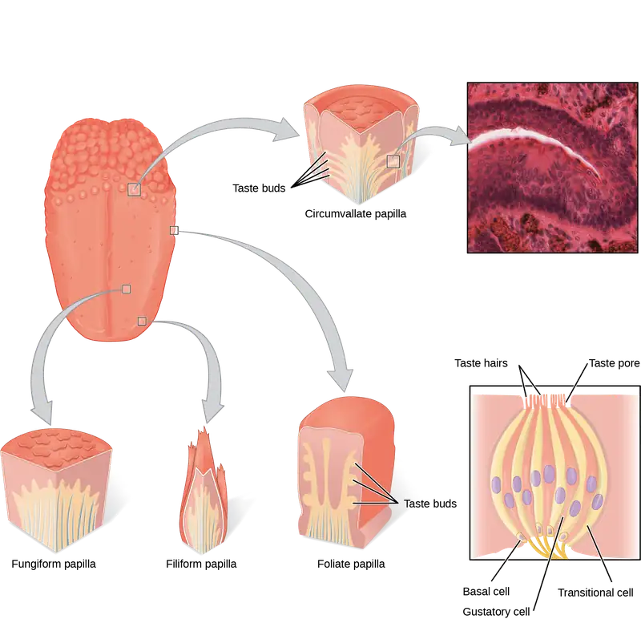
In humans, there are five primary tastes, and each taste has only one corresponding type of receptor. Thus, like olfaction, each receptor is specific to its stimulus (tastant). Transduction of the five tastes happens through different mechanisms that reflect the molecular composition of the tastant. A salty tastant (containing NaCl) provides the sodium ions (Na+) that enter the taste neurons and excite them directly. Sour tastants are acids and belong to the thermoreceptor protein family. Binding of an acid or other sour-tasting molecule triggers a change in the ion channel and these increase hydrogen ion (H+) concentrations in the taste neurons, thus depolarizing them. Sweet, bitter, and umami tastants require a G-protein coupled receptor. These tastants bind to their respective receptors, thereby exciting the specialized neurons associated with them.
Both tasting abilities and sense of smell change with age. In humans, the senses decline dramatically by age 50 and continue to decline. A child may find a food to be too spicy, whereas an elderly person may find the same food to be bland and unappetizing.
Interactive
View this animation that shows how the sense of taste works.
Smell and Taste in the Brain¶
Olfactory neurons project from the olfactory epithelium to the olfactory bulb as thin, unmyelinated axons. The olfactory bulb is composed of neural clusters called glomeruli, and each glomerulus receives signals from one type of olfactory receptor, so each glomerulus is specific to one odorant. From glomeruli, olfactory signals travel directly to the olfactory cortex and then to the frontal cortex and the thalamus. Recall that this is a different path from most other sensory information, which is sent directly to the thalamus before ending up in the cortex. Olfactory signals also travel directly to the amygdala, thereafter reaching the hypothalamus, thalamus, and frontal cortex. The last structure that olfactory signals directly travel to is a cortical center in the temporal lobe structure important in spatial, autobiographical, declarative, and episodic memories. Olfaction is finally processed by areas of the brain that deal with memory, emotions, reproduction, and thought.
Taste neurons project from taste cells in the tongue, esophagus, and palate to the medulla, in the brainstem. From the medulla, taste signals travel to the thalamus and then to the primary gustatory cortex. Information from different regions of the tongue is segregated in the medulla, thalamus, and cortex.
36.4 Hearing and Vestibular Sensation¶
Learning Objectives
By the end of this section, you will be able to do the following:
- Describe the relationship of amplitude and frequency of a sound wave to attributes of sound
- Trace the path of sound through the auditory system to the site of transduction of sound
- Identify the structures of the vestibular system that respond to gravity
Audition, or hearing, is important to humans and to other animals for many different interactions. It enables an organism to detect and receive information about danger, such as an approaching predator, and to participate in communal exchanges like those concerning territories or mating. On the other hand, although it is physically linked to the auditory system, the vestibular system is not involved in hearing. Instead, an animal’s vestibular system detects its own movement, both linear and angular acceleration and deceleration, and balance.
Sound¶
Auditory stimuli are sound waves, which are mechanical, pressure waves that move through a medium, such as air or water. There are no sound waves in a vacuum since there are no air molecules to move in waves. The speed of sound waves differs, based on altitude, temperature, and medium, but at sea level and a temperature of 20º C (68º F), sound waves travel in the air at about 343 meters per second.
As is true for all waves, there are four main characteristics of a sound wave: frequency, wavelength, period, and amplitude. Frequency is the number of waves per unit of time, and in sound is heard as pitch. High-frequency (≥15.,ds. For sound frequency, the most commonly used unit is hertz (Hz), or cycles per second. Most humans can perceive sounds with frequencies between 30 and 20,000 Hz. Everyone’s ability to hear high frequencies decreases with age. Dogs detect up to about 40,000 Hz; cats, 60,000 Hz; bats, 100,000 Hz; and dolphins 150,000 Hz, and American shad (Alosa sapidissima), a fish, can hear 180,000 Hz. Those frequencies above the human range are called ultrasound.
Amplitude, or the dimension of a wave from the resting position (the equilibrium) to the peak, in sound is heard as volume and is illustrated in Figure 36.12. The sound waves of louder sounds have greater amplitude than those of softer sounds. For sound, volume is measured in decibels (dB). The softest sound that a human can hear is the zero point. Humans speak normally at 60 decibels.

Reception of Sound¶
In mammals, sound waves are collected by the external, cartilaginous part of the ear called the auricle, then travel through the auditory canal and cause vibration of the thin diaphragm called the tympanum or ear drum, the innermost part of the outer ear (illustrated in Figure 36.13). Interior to the tympanum is the middle ear. The middle ear holds three small bones called the ossicles, which transfer energy from the moving tympanum to the inner ear. The three ossicles are the malleus (also known as the hammer), the incus (the anvil), and stapes (the stirrup). The aptly named stapes looks very much like a stirrup. The three ossicles are unique to mammals, and each plays a role in hearing. The malleus attaches at three points to the interior surface of the tympanic membrane. The incus attaches the malleus to the stapes. In humans, the stapes is not long enough to reach the tympanum. If we did not have the malleus and the incus, then the vibrations of the tympanum would never reach the inner ear. These bones also function to collect force and amplify sounds. The ear ossicles are homologous to bones in a fish mouth: the bones that support gills in fish are thought to be adapted for use in the vertebrate ear over evolutionary time. Many animals (frogs, reptiles, and birds, for example) use the stapes of the middle ear to transmit vibrations to the inner ear.
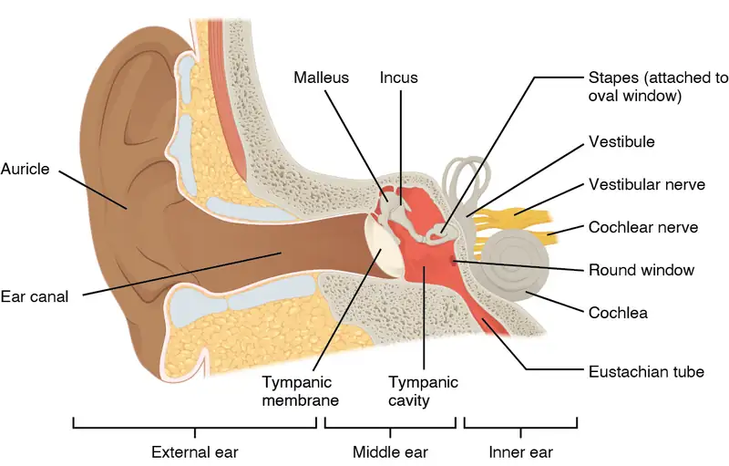
Transduction of Sound¶
Vibrating objects, such as vocal cords, create sound waves or pressure waves in the air. When these pressure waves reach the ear, the ear transduces this mechanical stimulus (pressure wave) into a nerve impulse (electrical signal) that the brain perceives as sound. The pressure waves strike the tympanum, causing it to vibrate. The mechanical energy from the moving tympanum transmits the vibrations to the three bones of the middle ear. The stapes transmits the vibrations to a thin diaphragm called the oval window, which is the outermost structure of the inner ear. The structures of the inner ear are found in the labyrinth, a bony, hollow structure that is the most interior portion of the ear. Here, the energy from the sound wave is transferred from the stapes through the flexible oval window and to the fluid of the cochlea. The vibrations of the oval window create pressure waves in the fluid (perilymph) inside the cochlea. The cochlea is a whorled structure, like the shell of a snail, and it contains receptors for transduction of the mechanical wave into an electrical signal (as illustrated in Figure 36.14). Inside the cochlea, the basilar membrane is a mechanical analyzer that runs the length of the cochlea, curling toward the cochlea’s center.
The mechanical properties of the basilar membrane change along its length, such that it is thicker, tauter, and narrower at the outside of the whorl (where the cochlea is largest), and thinner, floppier, and broader toward the apex, or center, of the whorl (where the cochlea is smallest). Different regions of the basilar membrane vibrate according to the frequency of the sound wave conducted through the fluid in the cochlea. For these reasons, the fluid-filled cochlea detects different wave frequencies (pitches) at different regions of the membrane. When the sound waves in the cochlear fluid contact the basilar membrane, it flexes back and forth in a wave-like fashion. Above the basilar membrane is the tectorial membrane.
Visual Connection

Cochlear implants can restore hearing in people who have a nonfunctional cochlea. The implant consists of a microphone that picks up sound. A speech processor selects sounds in the range of human speech, and a transmitter converts these sounds to electrical impulses, which are then sent to the auditory nerve. Which of the following types of hearing loss would not be restored by a cochlear implant?
- Hearing loss resulting from absence or loss of hair cells in the organ of Corti.
- Hearing loss resulting from an abnormal auditory nerve.
- Hearing loss resulting from fracture of the cochlea.
- Hearing loss resulting from damage to bones of the middle ear.
The site of transduction is in the organ of Corti (spiral organ). It is composed of hair cells held in place above the basilar membrane like flowers projecting up from soil, with their exposed short, hair-like stereocilia contacting or embedded in the tectorial membrane above them. The inner hair cells are the primary auditory receptors and exist in a single row, numbering approximately 3,500. The stereocilia from inner hair cells extend into small dimples on the tectorial membrane’s lower surface. The outer hair cells are arranged in three or four rows. They number approximately 12,000, and they function to fine tune incoming sound waves. The longer stereocilia that project from the outer hair cells actually attach to the tectorial membrane. All of the stereocilia are mechanoreceptors, and when bent by vibrations they respond by opening a gated ion channel (refer to Figure 36.15). As a result, the hair cell membrane is depolarized, and a signal is transmitted to the chochlear nerve. Intensity (volume) of sound is determined by how many hair cells at a particular location are stimulated.
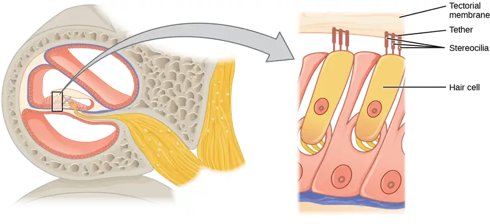
The hair cells are arranged on the basilar membrane in an orderly way. The basilar membrane vibrates in different regions, according to the frequency of the sound waves impinging on it. Likewise, the hair cells that lay above it are most sensitive to a specific frequency of sound waves. Hair cells can respond to a small range of similar frequencies, but they require stimulation of greater intensity to fire at frequencies outside of their optimal range. The difference in response frequency between adjacent inner hair cells is about 0.2 percent. Compare that to adjacent piano strings, which are about six percent different. Place theory, which is the model for how biologists think pitch detection works in the human ear, states that high frequency sounds selectively vibrate the basilar membrane of the inner ear near the entrance port (the oval window). Lower frequencies travel farther along the membrane before causing appreciable excitation of the membrane. The basic pitch-determining mechanism is based on the location along the membrane where the hair cells are stimulated. The place theory is the first step toward an understanding of pitch perception. Considering the extreme pitch sensitivity of the human ear, it is thought that there must be some auditory “sharpening” mechanism to enhance the pitch resolution.
When sound waves produce fluid waves inside the cochlea, the basilar membrane flexes, bending the stereocilia that attach to the tectorial membrane. Their bending results in action potentials in the hair cells, and auditory information travels along the neural endings of the bipolar neurons of the hair cells (collectively, the auditory nerve) to the brain. When the hairs bend, they release an excitatory neurotransmitter at a synapse with a sensory neuron, which then conducts action potentials to the central nervous system. The cochlear branch of the vestibulocochlear cranial nerve sends information on hearing. The auditory system is very refined, and there is some modulation or “sharpening” built in. The brain can send signals back to the cochlea, resulting in a change of length in the outer hair cells, sharpening or dampening the hair cells’ response to certain frequencies.
Interactive
Watch an animation of sound entering the outer ear, moving through the ear structure, stimulating cochlear nerve impulses, and eventually sending signals to the temporal lobe.
Higher Processing¶
The inner hair cells are most important for conveying auditory information to the brain. About 90 percent of the afferent neurons carry information from inner hair cells, with each hair cell synapsing with 10 or so neurons. Outer hair cells connect to only 10 percent of the afferent neurons, and each afferent neuron innervates many hair cells. The afferent, bipolar neurons that convey auditory information travel from the cochlea to the medulla, through the pons and midbrain in the brainstem, finally reaching the primary auditory cortex in the temporal lobe.
Vestibular Information¶
The stimuli associated with the vestibular system are linear acceleration (gravity) and angular acceleration and deceleration. Gravity, acceleration, and deceleration are detected by evaluating the inertia on receptive cells in the vestibular system. Gravity is detected through head position. Angular acceleration and deceleration are expressed through turning or tilting of the head.
The vestibular system has some similarities with the auditory system. It utilizes hair cells just like the auditory system, but it excites them in different ways. There are five vestibular receptor organs in the inner ear: the utricle, the saccule, and three semicircular canals. Together, they make up what’s known as the vestibular labyrinth that is shown in Figure 36.16. The utricle and saccule respond to acceleration in a straight line, such as gravity. The roughly 30,000 hair cells in the utricle and 16,000 hair cells in the saccule lie below a gelatinous layer, with their stereocilia projecting into the gelatin. Embedded in this gelatin are calcium carbonate crystals—like tiny rocks. When the head is tilted, the crystals continue to be pulled straight down by gravity, but the new angle of the head causes the gelatin to shift, thereby bending the stereocilia. The bending of the stereocilia stimulates the neurons, and they signal to the brain that the head is tilted, allowing the maintenance of balance. It is the vestibular branch of the vestibulocochlear cranial nerve that deals with balance.
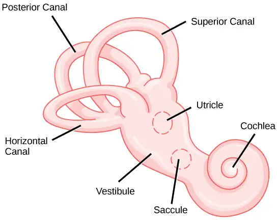
The fluid-filled semicircular canals are tubular loops set at oblique angles. They are arranged in three spatial planes. The base of each canal has a swelling that contains a cluster of hair cells. The hairs project into a gelatinous cap called the cupula and monitor angular acceleration and deceleration from rotation. They would be stimulated by driving your car around a corner, turning your head, or falling forward. One canal lies horizontally, while the other two lie at about 45 degree angles to the horizontal axis, as illustrated in Figure 36.16. When the brain processes input from all three canals together, it can detect angular acceleration or deceleration in three dimensions. When the head turns, the fluid in the canals shifts, thereby bending stereocilia and sending signals to the brain. Upon cessation of accelerating or decelerating—or just moving—the movement of the fluid within the canals slows or stops. For example, imagine holding a glass of water. When moving forward, water may splash backwards onto the hand, and when motion has stopped, water may splash forward onto the fingers. While in motion, the water settles in the glass and does not splash. Note that the canals are not sensitive to velocity itself, but to changes in velocity, so moving forward at 60mph with your eyes closed would not give the sensation of movement, but suddenly accelerating or braking would stimulate the receptors.
Higher Processing¶
Hair cells from the utricle, saccule, and semicircular canals also communicate through bipolar neurons to the cochlear nucleus in the medulla. Cochlear neurons send descending projections to the spinal cord and ascending projections to the pons, thalamus, and cerebellum. Connections to the cerebellum are important for coordinated movements. There are also projections to the temporal cortex, which account for feelings of dizziness; projections to autonomic nervous system areas in the brainstem, which account for motion sickness; and projections to the primary somatosensory cortex, which monitors subjective measurements of the external world and self-movement. People with lesions in the vestibular area of the somatosensory cortex see vertical objects in the world as being tilted. Finally, the vestibular signals project to certain optic muscles to coordinate eye and head movements.
Interactive
Click through this interactive tutorial to review the parts of the ear and how they function to process sound.
36.5 Vision¶
Learning Objectives
By the end of this section, you will be able to do the following:
- Explain how electromagnetic waves differ from sound waves
- Trace the path of light through the eye to the point of the optic nerve
- Explain tonic activity as it is manifested in photoreceptors in the retina
Vision is the ability to detect light patterns from the outside environment and interpret them into images. Animals are bombarded with sensory information, and the sheer volume of visual information can be problematic. Fortunately, the visual systems of species have evolved to attend to the most-important stimuli. The importance of vision to humans is further substantiated by the fact that about one-third of the human cerebral cortex is dedicated to analyzing and perceiving visual information.
Light¶
As with auditory stimuli, light travels in waves. The compression waves that compose sound must travel in a medium—a gas, a liquid, or a solid. In contrast, light is composed of electromagnetic waves and needs no medium; light can travel in a vacuum (Figure 36.17). The behavior of light can be discussed in terms of the behavior of waves and also in terms of the behavior of the fundamental unit of light—a packet of electromagnetic radiation called a photon. A glance at the electromagnetic spectrum shows that visible light for humans is just a small slice of the entire spectrum, which includes radiation that we cannot see as light because it is below the frequency of visible red light and above the frequency of visible violet light.
Certain variables are important when discussing perception of light. Wavelength (which varies inversely with frequency) manifests itself as hue. Light at the red end of the visible spectrum has longer wavelengths (and is lower frequency), while light at the violet end has shorter wavelengths (and is higher frequency). The wavelength of light is expressed in nanometers (nm); one nanometer is one billionth of a meter. Humans perceive light that ranges between approximately 380 nm and 740 nm. Some other animals, though, can detect wavelengths outside of the human range. For example, bees see near-ultraviolet light in order to locate nectar guides on flowers, and some non-avian reptiles sense infrared light (heat that prey gives off).
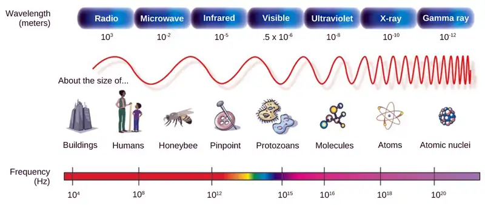
Wave amplitude is perceived as luminous intensity, or brightness. The standard unit of intensity of light is the candela, which is approximately the luminous intensity of one common candle.
Light waves travel 299,792 km per second in a vacuum, (and somewhat slower in various media such as air and water), and those waves arrive at the eye as long (red), medium (green), and short (blue) waves. What is termed “white light” is light that is perceived as white by the human eye. This effect is produced by light that stimulates equally the color receptors in the human eye. The apparent color of an object is the color (or colors) that the object reflects. Thus a red object reflects the red wavelengths in mixed (white) light and absorbs all other wavelengths of light.
Anatomy of the Eye¶
The photoreceptive cells of the eye, where transduction of light to nervous impulses occurs, are located in the retina (shown in Figure 36.18) on the inner surface of the back of the eye. But light does not impinge on the retina unaltered. It passes through other layers that process it so that it can be interpreted by the retina (Figure 36.18b). The cornea, the front transparent layer of the eye, and the crystalline lens, a transparent convex structure behind the cornea, both refract (bend) light to focus the image on the retina. The iris, which is conspicuous as the colored part of the eye, is a circular muscular ring lying between the lens and cornea that regulates the amount of light entering the eye. In conditions of high ambient light, the iris contracts, reducing the size of the pupil at its center. In conditions of low light, the iris relaxes and the pupil enlarges.
Visual Connection
![The left illustration shows a human eye, which is round and filled with vitreous humour. The optic nerve and retinal blood vessels exit the back of the eye. At the front of the eye is the lens with a pupil in the middle. The lens is covered by the iris, which in turn is covered by the cornea, which is a convex bump protruding from the eye. The aqueous humour is a gel-like substance between the cornea and iris. The retina is the lining of the inner eye. A second illustration is a blowup which shows that the optic nerve is at the surface of the retina. Beneath the optic nerve is a layer of ganglion cells, and beneath this is a layer of bipolar cells. Both ganglia and bipolar cells are nerve cells with root-like appendages. Beneath the bipolar cell layer are the rods and cones. Rods and cones are similar in structure and column-like.](img/figure-b36-05-02.webp)
Which of the following statements about the human eye is false?
- Rods detect color, while cones detect only shades of gray.
- When light enters the retina, it passes the ganglion cells and bipolar cells before reaching photoreceptors at the rear of the eye.
- The iris adjusts the amount of light coming into the eye.
- The cornea is a protective layer on the front of the eye.
The main function of the lens is to focus light on the retina and fovea centralis. The lens is dynamic, focusing and re-focusing light as the eye rests on near and far objects in the visual field. The lens is operated by muscles that stretch it flat or allow it to thicken, changing the focal length of light coming through it to focus it sharply on the retina. With age comes the loss of the flexibility of the lens, and a form of farsightedness called presbyopia results. Presbyopia occurs because the image focuses behind the retina. Presbyopia is a deficit similar to a different type of farsightedness called hyperopia caused by an eyeball that is too short. For both defects, images in the distance are clear but images nearby are blurry. Myopia (nearsightedness) occurs when an eyeball is elongated and the image focus falls in front of the retina. In this case, images in the distance are blurry but images nearby are clear.
There are two types of photoreceptors in the retina: rods and cones, named for their general appearance as illustrated in Figure 36.19. Rods are strongly photosensitive and are located in the outer edges of the retina. They detect dim light and are used primarily for peripheral and nighttime vision. Cones are weakly photosensitive and are located near the center of the retina. They respond to bright light, and their primary role is in daytime, color vision.
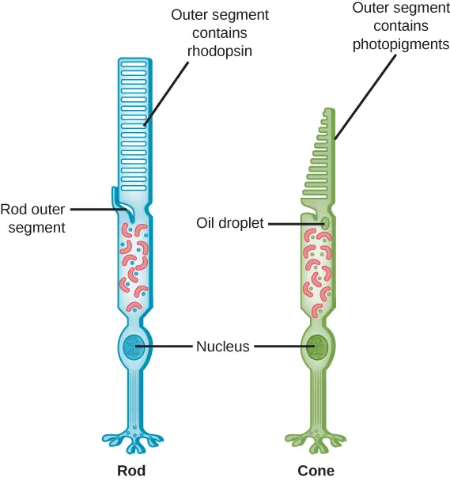
The fovea is the region in the center back of the eye that is responsible for acute vision. The fovea has a high density of cones. When you bring your gaze to an object to examine it intently in bright light, the eyes orient so that the object’s image falls on the fovea. However, when looking at a star in the night sky or other object in dim light, the object can be better viewed by the peripheral vision because it is the rods at the edges of the retina, rather than the cones at the center, that operate better in low light. In humans, cones far outnumber rods in the fovea.
Interactive
Review the anatomical structure of the eye by matching each part to practice identification.
Transduction of Light¶
The rods and cones are the site of transduction of light to a neural signal. Both rods and cones contain photopigments. In vertebrates, the main photopigment, rhodopsin, has two main parts (Figure 36.20): an opsin, which is a membrane protein (in the form of a cluster of α-helices that span the membrane), and retinal—a molecule that absorbs light. When light hits a photoreceptor, it causes a shape change in the retinal, altering its structure from a bent (cis) form of the molecule to its linear (trans) isomer. This isomerization of retinal activates the rhodopsin, starting a cascade of events that ends with the closing of Na+ channels in the membrane of the photoreceptor. Thus, unlike most other sensory neurons (which become depolarized by exposure to a stimulus) visual receptors become hyperpolarized and thus driven away from threshold (Figure 36.21).
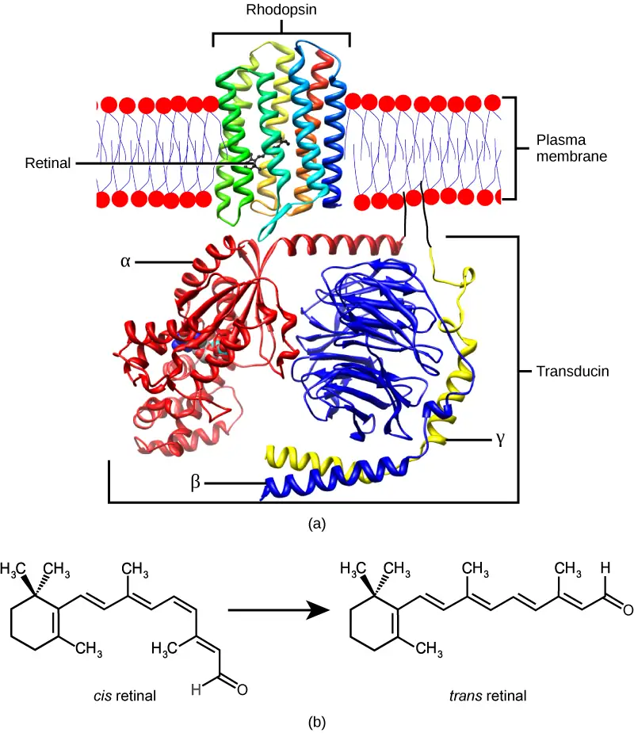
![Illustration A shows the signal transduction pathway for rhodopsin, which is located in internal membranes at the top of rod cells. When light strikes rhodopsin, a G protein called transducin is activated. Transducin has three subunits, alpha, beta and gamma. Upon activation, G D P on the alpha subunit is replaced with G T P. The subunit dissociates, and binds phosphodiesterase. Phosphodiesterase, in turn, converts c G M P to G M P, which closes sodium ion channels. As a result, sodium can no longer enter the cell, and the membrane becomes hyperpolarized. Illustration b shows that the tall, thin rod cell is stacked on top of a bipolar nerve cell. In the dark the membrane is depolarized, and glutamate is released from the rod cell to the axon terminal of the bipolar cell. In the light, no glutamate is released.](img/figure-b36-05-07ab.webp)
Trichromatic Coding¶
There are three types of cones (with different photopsins), and they differ in the wavelength to which they are most responsive, as shown in Figure 36.22. Some cones are maximally responsive to short light waves of 420 nm, so they are called S cones (“S” for “short”); others respond maximally to waves of 530 nm (M cones, for “medium”); a third group responds maximally to light of longer wavelengths, at 560 nm (L, or “long” cones). With only one type of cone, color vision would not be possible, and a two-cone (dichromatic) system has limitations. Primates use a three-cone (trichromatic) system, resulting in full color vision.
The color we perceive is a result of the ratio of activity of our three types of cones. The colors of the visual spectrum, running from long-wavelength light to short, are red (700 nm), orange (600 nm), yellow (565 nm), green (497 nm), blue (470 nm), indigo (450 nm), and violet (425 nm). Humans have very sensitive perception of color and can distinguish about 500 levels of brightness, 200 different hues, and 20 steps of saturation, or about 2 million distinct colors.
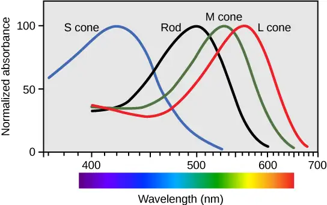
Retinal Processing¶
Visual signals leave the cones and rods, travel to the bipolar cells, and then to ganglion cells. A large degree of processing of visual information occurs in the retina itself, before visual information is sent to the brain.
Photoreceptors in the retina continuously undergo tonic activity. That is, they are always slightly active even when not stimulated by light. In neurons that exhibit tonic activity, the absence of stimuli maintains a firing rate at a baseline; while some stimuli increase firing rate from the baseline, and other stimuli decrease firing rate. In the absence of light, the bipolar neurons that connect rods and cones to ganglion cells are continuously and actively inhibited by the rods and cones. Exposure of the retina to light hyperpolarizes the rods and cones and removes their inhibition of bipolar cells. The now active bipolar cells in turn stimulate the ganglion cells, which send action potentials along their axons (which leave the eye as the optic nerve). Thus, the visual system relies on change in retinal activity, rather than the absence or presence of activity, to encode visual signals for the brain. Sometimes horizontal cells carry signals from one rod or cone to other photoreceptors and to several bipolar cells. When a rod or cone stimulates a horizontal cell, the horizontal cell inhibits more distant photoreceptors and bipolar cells, creating lateral inhibition. This inhibition sharpens edges and enhances contrast in the images by making regions receiving light appear lighter and dark surroundings appear darker. Amacrine cells can distribute information from one bipolar cell to many ganglion cells.
You can demonstrate this using an easy demonstration to “trick” your retina and brain about the colors you are observing in your visual field. Look fixedly at Figure 36.23 for about 45 seconds. Then quickly shift your gaze to a sheet of blank white paper or a white wall. You should see an afterimage of the Norwegian flag in its correct colors. At this point, close your eyes for a moment, then reopen them, looking again at the white paper or wall; the afterimage of the flag should continue to appear as red, white, and blue. What causes this? According to an explanation called opponent process theory, as you gazed fixedly at the green, black, and yellow flag, your retinal ganglion cells that respond positively to green, black, and yellow increased their firing dramatically. When you shifted your gaze to the neutral white ground, these ganglion cells abruptly decreased their activity and the brain interpreted this abrupt downshift as if the ganglion cells were responding now to their “opponent” colors: red, white, and blue, respectively, in the visual field. Once the ganglion cells return to their baseline activity state, the false perception of color will disappear.
Higher Processing¶
The myelinated axons of ganglion cells make up the optic nerves. Within the nerves, different axons carry different qualities of the visual signal. Some axons constitute the magnocellular (big cell) pathway, which carries information about form, movement, depth, and differences in brightness. Other axons constitute the parvocellular (small cell) pathway, which carries information on color and fine detail. Some visual information projects directly back into the brain, while other information crosses to the opposite side of the brain. This crossing of optical pathways produces the distinctive optic chiasma (Greek, for “crossing”) found at the base of the brain and allows us to coordinate information from both eyes.
Once in the brain, visual information is processed in several places, and its routes reflect the complexity and importance of visual information to humans and other animals. One route takes the signals to the thalamus, which serves as the routing station for all incoming sensory impulses except olfaction. In the thalamus, the magnocellular and parvocellular distinctions remain intact, and there are different layers of the thalamus dedicated to each. When visual signals leave the thalamus, they travel to the primary visual cortex at the rear of the brain. From the visual cortex, the visual signals travel in two directions. One stream that projects to the parietal lobe, in the side of the brain, carries magnocellular (“where”) information. A second stream projects to the temporal lobe and carries both magnocellular (“where”) and parvocellular (“what”) information.
Another important visual route is a pathway from the retina to the superior colliculus in the midbrain, where eye movements are coordinated and integrated with auditory information. Finally, there is the pathway from the retina to the suprachiasmatic nucleus (SCN) of the hypothalamus. The SCN is a cluster of cells that is considered to be the body’s internal clock, which controls our circadian (day-long) cycle. The SCN sends information to the pineal gland, which is important in sleep/wake patterns and annual cycles.
Interactive
View this presentation to review what you have learned about how vision functions.
Chapter Review¶
Key Terms¶
- audition
- sense of hearing
- auricle
- cartilaginous outer ear
- basilar membrane
- stiff structure in the cochlea that indirectly anchors auditory receptors
- bipolar neuron
- neuron with two processes extending from the cell body, typically in opposite directions
- candela
- (cd) unit of measurement of luminous intensity (brightness)
- circadian
- describes a time cycle about one day in length
- cochlea
- whorled structure that contains receptors for transduction of the mechanical wave into an electrical signal
- cone
- weakly photosensitive, chromatic, cone-shaped neuron in the fovea of the retina that detects bright light and is used in daytime color vision
- cornea
- transparent layer over the front of the eye that helps focus light waves
- fovea
- region in the center of the retina with a high density of photoreceptors and which is responsible for acute vision
- free nerve ending
- ending of an afferent neuron that lacks a specialized structure for detection of sensory stimuli; some respond to touch, pain, or temperature
- glabrous
- describes the non-hairy skin found on palms and fingers, soles of feet, and lips of humans and other primates
- glomerulus
- in the olfactory bulb, one of the two neural clusters that receives signals from one type of olfactory receptor
- Golgi tendon organ
- muscular proprioceptive tension receptor that provides the sensory component of the Golgi tendon reflex
- gustation
- sense of taste
- hyperopia
- (also, farsightedness) visual defect in which the image focus falls behind the retina, thereby making images in the distance clear, but close-up images blurry
- incus
- (also, anvil) second of the three bones of the middle ear
- inner ear
- innermost part of the ear; consists of the cochlea and the vestibular system
- iris
- pigmented, circular muscle at the front of the eye that regulates the amount of light entering the eye
- kinesthesia
- sense of body movement
- labyrinth
- bony, hollow structure that is the most internal part of the ear; contains the sites of transduction of auditory and vestibular information
- lens
- transparent, convex structure behind the cornea that helps focus light waves on the retina
- malleus
- (also, hammer) first of the three bones of the middle ear
- mechanoreceptor
- sensory receptor modified to respond to mechanical disturbance such as being bent, touch, pressure, motion, and sound
- Meissner’s corpuscle
- (also, tactile corpuscle) encapsulated, rapidly-adapting mechanoreceptor in the skin that responds to light touch
- Merkel's disk
- unencapsulated, slowly-adapting mechanoreceptor in the skin that responds to touch
- middle ear
- part of the hearing apparatus that functions to transfer energy from the tympanum to the oval window of the inner ear
- muscle spindle
- proprioceptive stretch receptor that lies within a muscle and that shortens the muscle to an optimal length for efficient contraction
- myopia
- (also, nearsightedness) visual defect in which the image focus falls in front of the retina, thereby making images in the distance blurry, but close-up images clear
- nociception
- neural processing of noxious (such as damaging) stimuli
- odorant
- airborne molecule that stimulates an olfactory receptor
- olfaction
- sense of smell
- olfactory bulb
- neural structure in the vertebrate brain that receives signals from olfactory receptors
- olfactory epithelium
- specialized tissue in the nasal cavity where olfactory receptors are located
- olfactory receptor
- dendrite of a specialized neuron
- organ of Corti
- in the basilar membrane, the site of the transduction of sound, a mechanical wave, to a neural signal
- ossicle
- one of the three bones of the middle ear
- outer ear
- part of the ear that consists of the auricle, ear canal, and tympanum and which conducts sound waves into the middle ear
- oval window
- thin diaphragm between the middle and inner ears that receives sound waves from contact with the stapes bone of the middle ear
- Pacinian corpuscle
- encapsulated mechanoreceptor in the skin that responds to deep pressure and vibration
- papilla
- one of the small bump-like projections from the tongue
- perception
- individual interpretation of a sensation; a brain function
- pheromone
- substance released by an animal that can affect the physiology or behavior of other animals
- presbyopia
- visual defect in which the image focus falls behind the retina, thereby making images in the distance clear, but close-up images blurry; caused by age-based changes in the lens
- proprioception
- sense of limb position; used to track kinesthesia
- pupil
- small opening through which light enters
- reception
- receipt of a signal (such as light or sound) by sensory receptors
- receptive field
- region in space in which a stimulus can activate a given sensory receptor
- receptor potential
- membrane potential in a sensory receptor in response to detection of a stimulus
- retina
- layer of photoreceptive and supporting cells on the inner surface of the back of the eye
- rhodopsin
- main photopigment in vertebrates
- rod
- strongly photosensitive, achromatic, cylindrical neuron in the outer edges of the retina that detects dim light and is used in peripheral and nighttime vision
- Ruffini ending
- (also, bulbous corpuscle) slowly-adapting mechanoreceptor in the skin that responds to skin stretch and joint position
- semicircular canal
- one of three half-circular, fluid-filled tubes in the vestibular labyrinth that monitors angular acceleration and deceleration
- sensory receptor
- specialized neuron or other cells associated with a neuron that is modified to receive specific sensory input
- sensory transduction
- conversion of a sensory stimulus into electrical energy in the nervous system by a change in the membrane potential
- stapes
- (also, stirrup) third of the three bones of the middle ear
- stereocilia
- in the auditory system, hair-like projections from hair cells that help detect sound waves
- superior colliculus
- paired structure in the top of the midbrain, which manages eye movements and auditory integration
- suprachiasmatic nucleus
- cluster of cells in the hypothalamus that plays a role in the circadian cycle
- tastant
- food molecule that stimulates gustatory receptors
- taste bud
- clusters of taste cells
- tectorial membrane
- cochlear structure that lies above the hair cells and participates in the transduction of sound at the hair cells
- tonic activity
- in a neuron, slight continuous activity while at rest
- tympanum
- (also, tympanic membrane or ear drum) thin diaphragm between the outer and middle ears
- ultrasound
- sound frequencies above the human detectable ceiling of approximately 20,000 Hz
- umami
- one of the five basic tastes, which is described as “savory” and which may be largely the taste of L-glutamate
- vestibular sense
- sense of spatial orientation and balance
- vision
- sense of sight
Summary¶
36.1 Sensory Processes¶
A sensory activation occurs when a physical or chemical stimulus is processed into a neural signal (sensory transduction) by a sensory receptor. Perception is an individual interpretation of a sensation and is a brain function. Humans have special senses: olfaction, gustation, equilibrium, and hearing, plus the general senses of somatosensation.
Sensory receptors are either specialized cells associated with sensory neurons or the specialized ends of sensory neurons that are a part of the peripheral nervous system, and they are used to receive information about the environment (internal or external). Each sensory receptor is modified for the type of stimulus it detects. For example, neither gustatory receptors nor auditory receptors are sensitive to light. Each sensory receptor is responsive to stimuli within a specific region in space, which is known as that receptor’s receptive field. The most fundamental function of a sensory system is the translation of a sensory signal to an electrical signal in the nervous system.
All sensory signals, except those from the olfactory system, enter the central nervous system and are routed to the thalamus. When the sensory signal exits the thalamus, it is conducted to the specific area of the cortex dedicated to processing that particular sense.
36.2 Somatosensation¶
Somatosensation includes all sensation received from the skin and mucous membranes, as well as from the limbs and joints. Somatosensation occurs all over the exterior of the body and at some interior locations as well, and a variety of receptor types, embedded in the skin and mucous membranes, play a role.
There are several types of specialized sensory receptors. Rapidly adapting free nerve endings detect nociception, hot and cold, and light touch. Slowly adapting, encapsulated Merkel’s disks are found in fingertips and lips, and respond to light touch. Meissner’s corpuscles, found in glabrous skin, are rapidly adapting, encapsulated receptors that detect touch, low-frequency vibration, and flutter. Ruffini endings are slowly adapting, encapsulated receptors that detect skin stretch, joint activity, and warmth. Hair receptors are rapidly adapting nerve endings wrapped around the base of hair follicles that detect hair movement and skin deflection. Finally, Pacinian corpuscles are encapsulated, rapidly adapting receptors that detect transient pressure and high-frequency vibration.
36.3 Taste and Smell¶
There are five primary tastes in humans: sweet, sour, bitter, salty, and umami. Each taste has its own receptor type that responds only to that taste. Tastants enter the body and are dissolved in saliva. Taste cells are located within taste buds, which are found on three of the four types of papillae in the mouth.
Regarding olfaction, there are many thousands of odorants, but humans detect only about 10,000. Like taste receptors, olfactory receptors are each responsive to only one odorant. Odorants dissolve in nasal mucosa, where they excite their corresponding olfactory sensory cells. When these cells detect an odorant, they send their signals to the main olfactory bulb and then to other locations in the brain, including the olfactory cortex.
36.4 Hearing and Vestibular Sensation¶
Audition is important for territory defense, predation, predator defense, and communal exchanges. The vestibular system, which is not auditory, detects linear acceleration and angular acceleration and deceleration. Both the auditory system and vestibular system use hair cells as their receptors.
Auditory stimuli are sound waves. The sound wave energy reaches the outer ear (auricle, canal, tympanum), and vibrations of the tympanum send the energy to the middle ear. The middle ear bones shift and the stapes transfers mechanical energy to the oval window of the fluid-filled inner ear cochlea. Once in the cochlea, the energy causes the basilar membrane to flex, thereby bending the stereocilia on receptor hair cells. This activates the receptors, which send their auditory neural signals to the brain.
The vestibular system has five parts that work together to provide the sense of direction, thus helping to maintain balance. The utricle and saccule measure head orientation: their calcium carbonate crystals shift when the head is tilted, thereby activating hair cells. The semicircular canals work similarly, such that when the head is turned, the fluid in the canals bends stereocilia on hair cells. The vestibular hair cells also send signals to the thalamus and to the somatosensory cortex, but also to the cerebellum, the structure above the brainstem that plays a large role in timing and coordination of movement.
36.5 Vision¶
Vision is the only photo responsive sense. Visible light travels in waves and is a very small slice of the electromagnetic radiation spectrum. Light waves differ based on their frequency (wavelength = hue) and amplitude (intensity = brightness).
In the vertebrate retina, there are two types of light receptors (photoreceptors): cones and rods. Cones, which are the source of color vision, exist in three forms—L, M, and S—and they are differentially sensitive to different wavelengths. Cones are located in the retina, along with the dim-light, achromatic receptors (rods). Cones are found in the fovea, the central region of the retina, whereas rods are found in the peripheral regions of the retina.
Visual signals travel from the eye over the axons of retinal ganglion cells, which make up the optic nerves. Ganglion cells come in several versions. Some ganglion cell axons carry information on form, movement, depth, and brightness, while other axons carry information on color and fine detail. Visual information is sent to the superior colliculi in the midbrain, where coordination of eye movements and integration of auditory information takes place. Visual information is also sent to the suprachiasmatic nucleus (SCN) of the hypothalamus, which plays a role in the circadian cycle.
Review Questions¶
36.1 Sensory Processes¶
1. Where does perception occur?
- spinal cord
- cerebral cortex
- receptors
- thalamus
Answer
B
2. If a person’s cold receptors no longer convert cold stimuli into sensory signals, that person has a problem with the process of ________.
- reception
- transmission
- perception
- transduction
Answer
D
3. After somatosensory transduction, the sensory signal travels through the brain as a(n) _____ signal.
- electrical
- pressure
- optical
- thermal
Answer
A
4. Many people experience motion sickness while traveling in a car. This sensation results from contradictory inputs arising from which senses?
- Proprioception and Kinesthesia
- Somatosensation and Equilibrium
- Gustation and Vibration
- Vision and Vestibular System
Answer
D
36.2 Somatosensation¶
5. _____ are found only in _____ skin, and detect skin deflection.
- Meissner’s corpuscles; hairy
- Merkel’s disks; glabrous
- hair receptors; hairy
- Krause end bulbs; hairy
Answer
B
6. If you were to burn your epidermis, what receptor type would you most likely burn?
- free nerve endings
- Ruffini endings
- Pacinian corpuscle
- hair receptors
Answer
A
7. Many diabetic patients are warned by their doctors to test their glucose levels by pricking the sides of their fingers rather than the pads. Pricking the sides avoids stimulating which receptor?
- Krause end bulbs
- Meissner’s corpuscles
- Ruffini ending
- Nociceptors
Answer
B
36.3 Taste and Smell¶
8. Which of the following has the fewest taste receptors?
- fungiform papillae
- circumvallate papillae
- foliate papillae
- filiform papillae
Answer
D
9. How many different taste molecules do taste cells each detect?
- one
- five
- ten
- It depends on the spot on the tongue.
Answer
A
10. Salty foods activate the taste cells by _____.
- exciting the taste cell directly
- causing hydrogen ions to enter the cell
- causing sodium channels to close
- binding directly to the receptors
Answer
A
11. All sensory signals except _____ travel to the _____ in the brain before the cerebral cortex.
- vision; thalamus
- olfaction; thalamus
- vision; cranial nerves
- olfaction; cranial nerves
Answer
B
12. How is the ability to recognize the umami taste an evolutionary advantage?
- Umami identifies healthy foods that are low in salt and sugar.
- Umami enhances the flavor of bland foods.
- Umami identifies foods that might contain essential amino acids.
- Umami identifies foods that help maintain electrolyte balance.
Answer
C
36.4 Hearing and Vestibular Sensation¶
13. In sound, pitch is measured in _____, and volume is measured in _____.
- nanometers (nm); decibels (dB)
- decibels (dB); nanometers (nm)
- decibels (dB); hertz (Hz)
- hertz (Hz); decibels (dB)
Answer
D
14. Auditory hair cells are indirectly anchored to the _____.
- basilar membrane
- oval window
- tectorial membrane
- ossicles
Answer
A
15. Which of the following are found both in the auditory system and the vestibular system?
- basilar membrane
- hair cells
- semicircular canals
- ossicles
Answer
B
16. Benign Paroxysmal Positional Vertigo is a disorder where some of the calcium carbonate crystals in the utricle migrate into the semicircular canals. Why does this condition cause periods of dizziness?
- The hair cells in the semicircular canals will be constantly activated.
- The hair cells in the semicircular canals will now be stimulated by gravity.
- The utricle will no longer recognize acceleration.
- There will be too much volume in the semicircular canals for them to detect motion.
Answer
B
36.5 Vision¶
17. Why do people over 55 often need reading glasses?
- Their cornea no longer focuses correctly.
- Their lens no longer focuses correctly.
- Their eyeball has elongated with age, causing images to focus in front of their retina.
- Their retina has thinned with age, making vision more difficult.
Answer
B
18. Why is it easier to see images at night using peripheral, rather than the central, vision?
- Cones are denser in the periphery of the retina.
- Bipolar cells are denser in the periphery of the retina.
- Rods are denser in the periphery of the retina.
- The optic nerve exits at the periphery of the retina.
Answer
C
19. A person catching a ball must coordinate her hand and eyes. What part of the brain is helping to do this?
- hypothalamus
- pineal gland
- thalamus
- superior colliculus
Answer
D
20. A satellite is launched into space, but explodes after exiting the Earth’s atmosphere. Which statement accurately reflects the observations made by an astronaut on a space walk outside the International Space Station during the explosion?
- The astronaut would see the explosion, but would not hear a boom.
- The astronaut will not sense the explosion.
- The astronaut will see the explosion, and then hear the boom.
- The astronaut will feel the concussive force of the explosion, but will not see it.
Answer
A
Critical Thinking Questions¶
36.1 Sensory Processes¶
21. If a person sustains damage to axons leading from sensory receptors to the central nervous system, which step or steps of sensory perception will be affected?
Answer
Transmission of sensory information from the receptor to the central nervous system will be impaired, and thus, perception of stimuli, which occurs in the brain, will be halted.
22. In what way does the overall magnitude of a stimulus affect the just-noticeable difference in the perception of that stimulus?
Answer
The just-noticeable difference is a fraction of the overall magnitude of the stimulus and seems to be a relatively fixed proportion (such as 10 percent) whether the stimulus is large (such as a very heavy object) or small (such as a very light object).
23. Describe the difference in the localization of the sensory receptors for general and special senses in humans.
Answer
General sensory receptors are located throughout the body in the skin and internal organs. Conversely, special senses are all located in the head region, and require specialized organs.
36.2 Somatosensation¶
24. What can be inferred about the relative sizes of the areas of cortex that process signals from skin not densely innervated with sensory receptors and skin that is densely innervated with sensory receptors?
Answer
The cortical areas serving skin that is densely innervated likely are larger than those serving skin that is less densely innervated.
25. Many studies have demonstrated that females are able to tolerate the same painful stimuli for longer than males. Why don’t all people experience pain the same way?
Answer
Pain is a subjective sensation that relies on the brain interpreting the nociception signals received by the sensory receptors (perception). Therefore, even though two people experience identical stimuli, their brains can perceive them as very different sensory experiences.
36.3 Taste and Smell¶
26. From the perspective of the recipient of the signal, in what ways do pheromones differ from other odorants?
Answer
Pheromones may not be consciously perceived, and pheromones can have direct physiological and behavioral effects on their recipients.
27. What might be the effect on an animal of not being able to perceive taste?
Answer
The animal might not be able to recognize the differences in food sources and thus might not be able to discriminate between spoiled food and safe food or between foods that contain necessary nutrients, such as proteins, and foods that do not.
28. A few recent cancer detection studies have used trained dogs to detect lung cancer in urine samples. What is the hypothesis behind this study? Why are dogs a better choice of detectors in this study than humans?
Answer
These studies rely on the dogs’ olfactory senses. The hypothesis behind the study is that the dogs are capable of detecting volatile compounds (evaporating scent molecules) that are only produced in people with cancer. The dogs are a better choice because their sense of smell is more sensitive due to the increased number of olfactory receptors.
36.4 Hearing and Vestibular Sensation¶
29. How would a rise in altitude likely affect the speed of a sound transmitted through air? Why?
Answer
The sound would slow down, because it is transmitted through the particles (gas) and there are fewer particles (lower density) at higher altitudes.
30. How might being in a place with less gravity than Earth has (such as Earth’s moon) affect vestibular sensation, and why?
Answer
Because vestibular sensation relies on gravity’s effects on tiny crystals in the inner ear, a situation of reduced gravity would likely impair vestibular sensation.
31. How does the structure of the ear allow a person to determine where a sound originates?
Answer
The first step in processing a sound in humans is the collection of sound by the auricle. When a person encounters a sound, the auricle on both sides of the head will collect the vibrations. Since the waves originate from a single site, the two auricles will not collect the sound at the exact same time. When the sound is processed by the auditory system, the brain is able to use this slight difference in timing to determine the location of the sound.
36.5 Vision¶
32. How could the pineal gland, the brain structure that plays a role in annual cycles, use visual information from the suprachiasmatic nucleus of the hypothalamus?
Answer
The pineal gland could use length-of-day information to determine the time of year, for example. Day length is shorter in the winter than it is in the summer. For many animals and plants, photoperiod cues them to reproduce at a certain time of year.
33. How is the relationship between photoreceptors and bipolar cells different from other sensory receptors and adjacent cells?
Answer
The photoreceptors tonically inhibit the bipolar cells, and stimulation of the receptors turns this inhibition off, activating the bipolar cells.
34. Cataracts, the medical condition where the lens of the eye becomes cloudy, are a leading cause of blindness. Describe how developing a cataract would change the path of light through the eye.
Answer
The purpose of the lens in the eye is to focus the light beams on the retina so that the image seen by the eye can be transmitted to the optic nerve and interpreted. When the lens becomes cloudy instead of clear, it scatters the light over the back of the retina. The vision system cannot interpret the image then.
Visual Connection Questions¶
36.2 Somatosensation¶
35. Figure 36.5 Which of the following statements about mechanoreceptors is false?
- Pacini corpuscles are found in both glabrous and hairy skin.
- Merkel’s disks are abundant on the fingertips and lips.
- Ruffini endings are encapsulated mechanoreceptors.
- Meissner’s corpuscles extend into the lower dermis.
Answer
36.4 Hearing and Vestibular Sensation¶
36. Figure 36.14 Cochlear implants can restore hearing in people who have a nonfunctional cochlea. The implant consists of a microphone that picks up sound. A speech processor selects sounds in the range of human speech, and a transmitter converts these sounds to electrical impulses, which are then sent to the auditory nerve. Which of the following types of hearing loss would not be restored by a cochlear implant?
- Hearing loss resulting from absence or loss of hair cells in the organ of Corti.
- Hearing loss resulting from an abnormal auditory nerve.
- Hearing loss resulting from fracture of the cochlea.
- Hearing loss resulting from damage to bones of the middle ear.
Answer
36.5 Vision¶
37. Figure 36.18 Which of the following statements about the human eye is false?
- Rods detect color, while cones detect only shades of gray.
- When light enters the retina, it passes the ganglion cells and bipolar cells before reaching photoreceptors at the rear of the eye.
- The iris adjusts the amount of light coming into the eye.
- The cornea is a protective layer on the front of the eye.
Answer
Adapted from Biology 2e by OpenStax, licensed under CC BY 4.0. Access the original for free at openstax.org. Changes: converted to the web reading format of The Open Book Project.